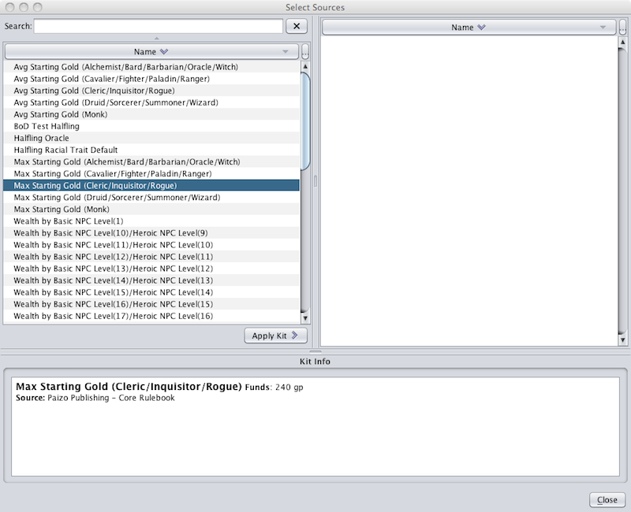
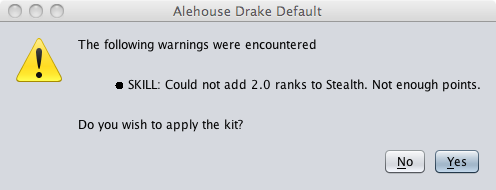

The Add Kit command opens up a new window containing a set of kits for the user to apply to the active character. This is done mainly to help speed up character. Kits can also be used to quickly create monsters by the application of a Default Monster Kit. In general, kits can be applied at any time to a character.

The left hand pane contains a list of available kits. Kits appearing in red contain prerequisites that the active character does not meet and therefoe may not be applied to the character.
You can click on a kit in the left hand pane to bring up information on that kit.
You can either double click on an item, or select and click the Apply Kit > button, to apply it to the active character.
When you have applied the kit it will appear in the right hand pane.
To create a monster the user must create a new character and choose the Add Kit menu item before selecting a race. Begin typing the name of the desired monster into the "Search" field and the Add Kit window will automatically filter out most kits. Once the desired Default Monster Kit has appeared the user can select it and apply it to the new character, creating the desired monster. If you have already selected a race only those Default Monster Kits for which that race qualifies for will be displayed.
A dialog box may pop up listing parts of the kit that are not able to be applied. The cause is of this failure is usually caused by insufficient feat slots, skill points, or coins. The warning dialog provides the options to apply or abort the kit.
